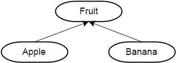
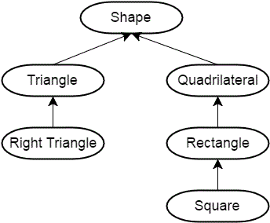

在上一章中我们讨论了对象组合——复杂的类可以通过简单的类和类型组成。对象组合非常适合构建整体和部分具有“有一个”语义关系的对象。不过，对象组合只是C++提供的两种构建复杂类的方式之一。另外一种主要方式是继承，它表示两个对象之间的“是一个”关系。
继承和组合不同，组合语义涉及到一个对象对另外一些对象的组合和连接，继承则是新对象通过直接获取其他对象的属性和行为来扩展或特殊化(specializing)自己。和对象组合类似，继承在现实生活中也随处可见——你继承了父母的基因，从他们身上获取了一些物理特征，但是你同时也具有个性的一面。科技产品（计算机、手机等）从它们的老款中继承了一些特性（当需要向后兼容的时候）。例如，Intel 奔腾处理器从 486 处理器上继承了很多功能，而486也从更早期的处理器上继承了一些功能。C++ 继承了很多 C 语言的特征，而 C 语言也从更早期的编程语言中有所借鉴。
以苹果和香蕉为例。尽管苹果和香蕉是不同的水果，但是它们都是水果。因为它们都是水果，所以从逻辑的角度来讲，任何有关水果的为真的论断，同样也适用于苹果和香蕉。例如，水果有名字、颜色和大小。因此，苹果和香蕉也有名字、颜色和大小。我们可以说苹果和香蕉继承了水果的一些属性。我们还知道，水果需要经历一个成熟的过程，成熟之后的水果就可以吃了。因为苹果和香蕉是水果，所以它们也继承了这个成熟的过程。
如果通过图表形式来展现苹果、香蕉和水果的关系，应该看上去是这个样子的：

从图中可以看出一种层次结构。
层次结构#
层次结构是一种对象间的关系（基于图表进行展示）。大多数的层次结构能够体现随着时间变化的过程 (386 → 486 → Pentium)，或是从宽泛概念逐渐分化的过程(水果 → 苹果 → 蛇果)。如果你上过生物课的话，那么应该会了解著名的“域、界、门、纲、目、科、属、种“，这种层次结构（从一般到特殊）
这是另一个层次结构的例子：正方形是矩形，矩形是四边形，四边形是一种形状。直角三角形是三角形，三角形也是一种形状。将其放入层次图中，看起来像这样:

这个图从一般的(上)到特殊的(下)，层次结构中的每个项目继承上面项目的属性和行为。
先睹为快#
在本章中，我们会讨论使用 C++ 中继承的基本方式。
在下一章中，我们会讨论继承如何基于虚函数来多态（面向对象中最常见的概念之一）。
随后，我们还会讨论使用继承而带来的一些优势和劣势。